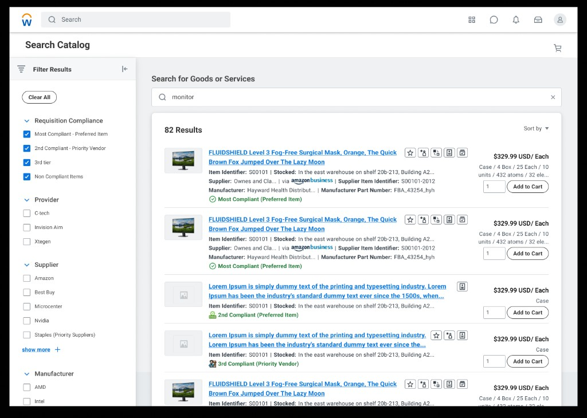
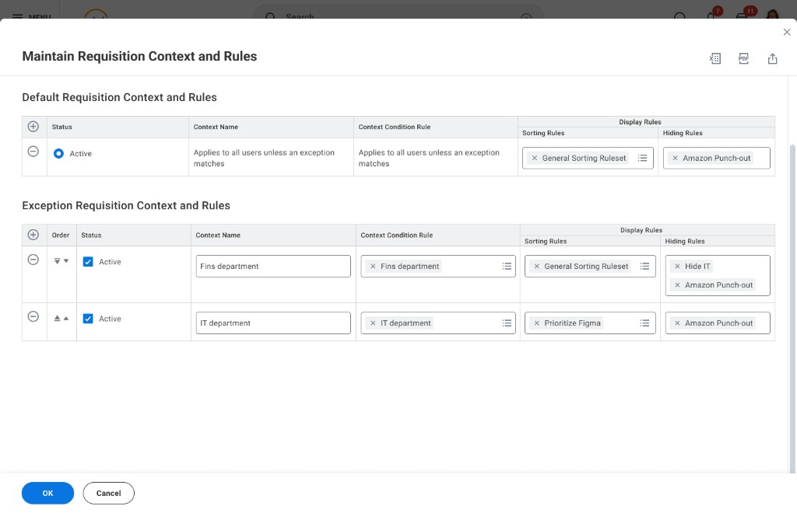
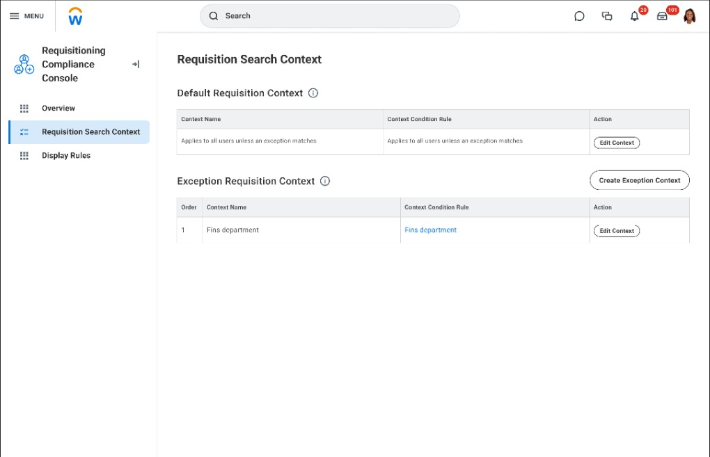
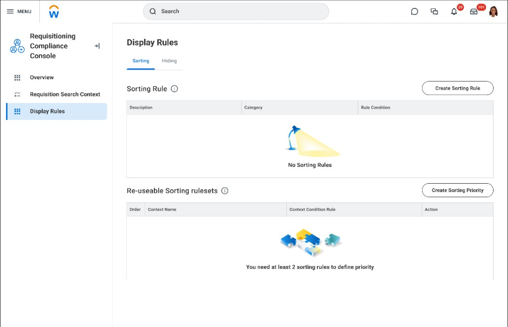

Workday · Desktop
Workday · Desktop
Purchase Compliance
User context isn't just another table of data — it's part of the experience.

People who run buying rules were doing too much by hand. The old setup ignored how teams and departments are actually organized — so rules were slow to build, easy to break, and hard to trust as the company grew.
We evaluated three rule models — item, item+rule, and user-group. User groups won because admins already think in org structure. One modeling choice unlocked precision without per-item spaghetti.
An admin console with clear defaults, exceptions, and what wins when rules conflict — plus separate areas for search vs what shoppers see. The same rules show up in the product catalog so buyers see what's allowed where they shop.
Workday 2024–2025. 94% faster to set up rules, 100% task success in usability tests, adopted by buying teams — and the same pattern reused in other admin tools.

The problem
Manual policy work that didn't match how teams actually work
If buying rules aren't your world
Large companies need software to answer four questions over and over: who does a rule apply to, what's allowed by default, what exceptions exist, and where do people actually see the outcome when they try to buy something. The screens are dense because mistakes are expensive — wrong rules mean wrong spend, delays, and audits.
The rest walks through the problem, what we learned, the design choice, the admin console, and how shoppers see the same rules in catalog search.
Same idea, different words
Many enterprise products ask admins to set policy at scale: attach it to the right groups, handle exceptions, resolve conflicts, and show outcomes where people work — not only on a settings screen. This project is about buying compliance, but the interaction pattern is familiar: clear nesting, what wins when rules disagree, safe defaults, and showing results where people search and shop.
| Plain idea | In this product |
|---|---|
| Who the rule applies to | User groups tied to org structure — teams, cost centers, hierarchy |
| Default vs override | A baseline rule, plus exceptions when something special applies |
| What wins when rules disagree | Priority order you can review in the console |
| Where people feel the rule | Catalog search — ranked results, filters, and labels for shoppers |
Manual work didn't scale
Admins were enforcing policy by hand — reviews, one-off guidance, training — while the tool asked them to wire rules in ways that ignored how the company is actually organized. It worked in demos, not at real volume.
What had to be true
- Rule setup had to be repeatable — not a custom project every time.
- Powerful rules without needing a technical background; onboarding had to be manageable.
- Grow with the company without fragile one-offs or slowdowns at scale.
From research to a shippable model
Working sessions with PM, engineering, research, and customer admins tested rule models, edge cases, and what "good enough to ship" meant — before we locked in the user-group direction and the default/exception layout in the console.
Exploration
Three rule models — and why user groups won
Three ways to model rules
We evaluated item-based, item + rule, and user-group-based structures — trade-offs were precision, adoption, and scale.
| Approach | Precision | Scalability | Adoption | Performance |
|---|---|---|---|---|
| Item-Based Rules per item |
High | Low | Low | Issues |
| Item-Rule Based Rules per item + category/vendor |
High | Partial | Moderate | Moderate |
| User Group-BasedSelected Rules per user group |
Highest | Scalable | High | High |
Why user groups won: rules attach to data admins already use — teams, cost centers, hierarchy — so configuration matches mental models and scales without per-item spaghetti.
From ad hoc linking to guided, org-aligned rules
No guidance built in
- No clear starting point
- Rules disconnected from user groups
- Aimless linking between items and rules
- No help along the way
Guided, contextual configuration
- Guided rule-building flow
- Default + exception model with clear priority
- Rules aligned to user groups and org structure
- Clear scope — who each rule applies to
From admin setup to what shoppers see
Three steps before the detailed screens below.
Define
Admins attach rules to the parts of the org that actually own buying policy.
Configure
The console makes defaults, exceptions, and order easy to scan — so teams don't mis-wire high-stakes rules.
Surface
Shoppers see the same rules when they search and compare options — not only in back-office screens.
The console
Defaults and exceptions that stay readable at volume
With engineering and customers, we shipped the buying rules console: separate areas for baseline vs exception rules, clear priority order, and distinct screens for search behavior vs what shoppers see (sort vs hide). High-volume admins can scan what wins when, then drill in — including bulk edit where needed.



I owned the admin journey end-to-end: research synthesis, comparing three rule models (item vs item-rule vs user-group), console layout with engineering and customers, usability testing, and partnership with PM and eng to ship something people would actually adopt.
Dense admin work, still navigable
Stepped flows, wide tables, and nested rules needed predictable keyboard paths, readable hierarchy at default zoom, and guardrails where mistakes are costly — tightened with engineering so the console held up for high-volume admins, not only demo-clean layouts.
Downstream impact
The same rules, visible where people actually shop
Policy isn't invisible to buyers. Catalog search uses the same tiers to rank and label results — filters match compliance categories, and preferred options rise above a plain keyword match.
I've been so eager to see this — I just spent the last 4 hours playing around with it. So far, it's AWESOME!
Outcomes
What shipped and what stuck
Research reshaped what we shipped first
Usability results and sponsor feedback helped us prioritize core setup reliability before edge-case polish, then show the same rules in catalog search so shoppers — not only admins — felt the value.
Measured results
- 94% faster to configure buying rules
- 100% task completion in usability testing
- Shipped in Workday 2024–2025: user-group-based console, default/exception layout, and rules surfaced in catalog search
- Adopted by buying teams; pattern reused in other admin tools
What stuck
Anchor rules to org structure
User-group-based modeling beat item-level sprawl: one decision unlocked precision and scale for admins.
Make nesting scannable
Baseline + exception + priority order, plus splitting search vs display rules, kept complex policy readable at volume.
Prove value in the catalog
Admins trust the system when shoppers see compliance in ranked results — not only in back-office screens.
Co-design with admins
Walkthroughs with customer admins kept language and grouping aligned with how policy teams talk about defaults, exceptions, and priority.
Density when it matters
When shared patterns skewed too light, prototypes showed where inline reorder, split contexts, and density were non-negotiable for rule volume.
"User context isn't just another table of data — it's part of the experience!"
Where this goes next: a governed compliance agent
The roadmap idea above — suggested rules and live impact preview — taken one step further. An agent watches catalog, supplier, and spend signals and proactively proposes rule changes; admins approve, edit, or override with an autonomy level they control, and every change is simulated and reversible. A concept exploration, not a shipped feature.
Open the agentic concept →